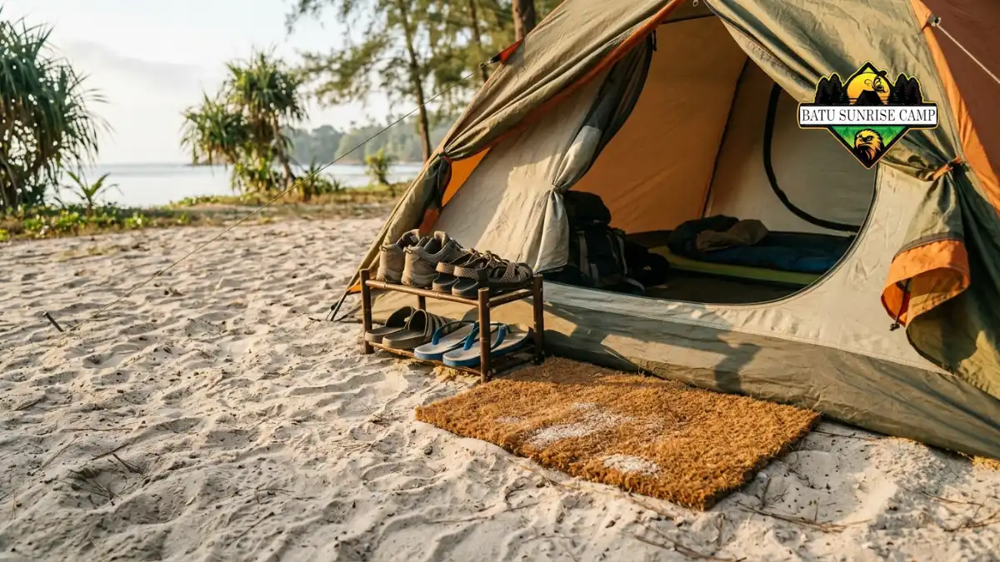

Trik mencegah pasir masuk tenda meliputi memilih lokasi terlindung angin, memasang tenda kencang, menutup celah bawah dinding, dan menyediakan zona sepatu di luar tenda.
- Sumber pasir di dalam tenda terutama berasal dari angin, celah bawah dinding, dan sepatu atau pakaian yang terbawa masuk.
- Lokasi yang terlindung angin mengurangi jumlah pasir sebelum perlengkapan apa pun dipakai.
- Tenda yang terpasang kencang dengan flysheet rendah membuat celah masuk pasir lebih kecil.
- Keset, rak sepatu, dan kebiasaan menepuk pakaian menjaga ruang tidur tetap bersih.
- Saat angin berpasir kencang, tutup ventilasi dan pintu serta tambah tali penahan.
Mengapa Pasir Bisa Masuk ke Dalam Tenda?
Pasir masuk tenda karena angin membawa butiran halus, lantai tenda terbuka ke tanah berpasir, dan sepatu atau pakaian membawa pasir ke dalam saat keluar masuk.
Pasir terdiri dari butiran kecil yang ringan bila kering. Skala ukuran butir Wentworth dari United States Geological Survey (USGS), yang masih menjadi rujukan pada 2026, mendefinisikan pasir sebagai butiran berdiameter sekitar 0,0625 sampai 2 milimeter. Butiran sehalus itu mudah terbawa udara dan menyelip melalui celah kecil.
Angin juga berperan besar. Skala Beaufort yang dipublikasikan National Weather Service (NOAA) dan masih dipakai layanan cuaca pada 2026 menggolongkan angin 20 sampai 28 kilometer per jam sebagai angin sedang yang sudah mengangkat debu dan kertas lepas di daratan. Artinya, angin yang terasa biasa saja sudah cukup untuk menerbangkan pasir kering ke arah tenda.
Selain angin, ada tiga jalur utama pasir masuk. Jalur pertama adalah celah antara flysheet dan tanah. Jalur kedua adalah ventilasi dan pintu yang dibuka tanpa memperhatikan arah angin.
Jalur ketiga adalah manusia, yaitu sepatu, kaus kaki, rambut, dan tas yang membawa pasir. Memahami ketiga jalur ini membantu setiap trik di bawah menjadi tepat sasaran.
Bagaimana Cara Memilih Lokasi Tenda yang Minim Pasir?
Lokasi tenda yang baik berupa area datar terlindung dari angin oleh vegetasi, gundukan, atau bangunan, dengan permukaan padat dan tidak berada di bibir pantai terbuka.
Pemilihan lokasi mengurangi sumber masalah sejak awal. Panduan terperinci tersedia di artikel cara memilih lokasi tenda di area berpasir. Berikut prinsip dasarnya.
Cari pelindung angin
Semak, pepohonan, tebing rendah, atau gundukan dapat memecah angin sehingga pasir tidak langsung menerpa tenda. Pastikan tenda tidak berada di bawah dahan rapuh atau di jalur aliran air.
Pilih permukaan yang padat
Pasir lembap atau tanah berumput lebih sulit terangkat dibanding pasir kering yang gembur. Bila memungkinkan, mendirikan tenda di area berumput di belakang garis pantai mengurangi pasir yang beterbangan.
Perhatikan arah angin
Amati gerak rumput, bendera, atau ombak untuk mengetahui arah angin. Posisikan sisi tenda yang paling sempit atau tanpa pintu menghadap angin. Periksa juga aturan pengelola kawasan dan kondisi pasang surut sebelum menetapkan lokasi.
Perlengkapan Apa yang Membantu Menahan Pasir?
Perlengkapan yang membantu menahan pasir meliputi groundsheet atau footprint, tenda berlantai bathtub, keset pintu, tempat sepatu, kantong plastik, serta sikat kecil untuk membersihkan.
Tenda dengan lantai bathtub, yaitu lantai yang naik beberapa sentimeter di sisi dinding, memiliki sambungan lebih tinggi dari tanah sehingga pasir lebih sulit menyelip.
Groundsheet atau footprint di bawah tenda melindungi lantai dari gesekan pasir sekaligus memudahkan pembersihan setelah berkemah.
Keset atau terpal kecil di depan pintu berfungsi sebagai tempat berpijak saat melepas sepatu. Kantong plastik dapat dipakai untuk membungkus sepatu berpasir agar tidak mengotori ruang tidur. Sikat kecil dan sapu mini berguna untuk menyapu pasir yang telanjur masuk.
Pasak yang sesuai juga termasuk perlengkapan penting karena tenda yang longgar akan berkibar dan membuka celah. Pembahasan lengkap tersedia di artikel cara memasang pasak tenda di pasir.
Bagaimana Cara Memasang Tenda Agar Rapat dan Kencang?
Pasang tenda dengan pintu membelakangi arah angin, tancapkan pasak miring, kencangkan semua tali, dan pastikan flysheet menjuntai hingga dekat tanah agar celah angin kecil.
Tenda yang kendur akan bergetar dan memompa udara masuk melalui celah bawah dinding. Setelah tenda berdiri, periksa setiap sudut dan tarik tali penahan sampai kain terasa rata tanpa kerutan besar.
Urutan pemasangan yang umum adalah sebagai berikut. Pertama, bentangkan groundsheet dan pastikan tidak mencuat keluar dari tepi tenda karena dapat menampung air dan pasir. Kedua, pasang rangka dan tancapkan pasak sudut.
Ketiga, pasang flysheet dan atur tinggi sehingga tepi bawahnya rendah. Keempat, tarik tali penahan dan periksa ulang setelah beberapa jam, sebab pasir dapat bergeser dan membuat tali mengendur.
Flysheet yang rendah memang mengurangi aliran udara, jadi sisakan ventilasi di sisi yang membelakangi angin untuk mencegah kondensasi di dalam tenda.
Bagaimana Mengatur Pintu dan Zona Sepatu Tenda?
Zona sepatu di vestibul atau luar pintu mencegah pasir terbawa ke ruang tidur, terutama bila sepatu dilepas sebelum masuk dan pakaian ditepuk lebih dulu.

Zona sepatu di depan pintu tenda dilengkapi keset dan tempat sandal menjaga pasir tidak terbawa ke ruang tidur saat keluar masuk tenda.
Banyak pasir di dalam tenda sebenarnya dibawa penghuninya sendiri. Karena itu, siapkan satu titik khusus di depan pintu sebagai area transisi. Letakkan keset atau terpal, taruh rak atau kantong untuk sepatu, dan sediakan sikat kecil.
Biasakan duduk di bibir pintu, lepas sepatu, tepuk kaki dan ujung celana, lalu masuk dengan kaus kaki bersih.
Buka pintu seperlunya dan tutup resleting segera, sebab pintu terbuka menjadi jalur masuk pasir tercepat saat angin bertiup. Kebiasaan harian yang lebih lengkap dibahas di artikel cara menjaga bagian dalam tenda bebas pasir.
Kesalahan Umum yang Membuat Pasir Masuk Tenda
Kesalahan umum yang membuat pasir masuk tenda adalah membuka pintu menghadap angin, membiarkan ventilasi terbuka lebar, memasang tenda longgar, dan membawa sepatu berpasir ke dalam.
Kesalahan pertama adalah memilih lokasi hanya karena pemandangan. Bibir pantai terbuka memang indah, tetapi paling banyak menerima angin dan pasir kering.
Kesalahan kedua adalah memasang pintu menghadap angin sehingga setiap kali dibuka, pasir langsung masuk.
Kesalahan ketiga adalah memasang tenda dengan tali kendur atau pasak tegak lurus sehingga mudah tercabut.
Kesalahan keempat adalah meninggalkan ventilasi terbuka lebar saat angin kencang, padahal ventilasi sebaiknya dibuka di sisi yang terlindung.
Kesalahan kelima adalah meletakkan tas atau perlengkapan di tanah, lalu membawanya masuk tanpa dibersihkan.
Menghindari kelima kesalahan ini biasanya sudah cukup mengurangi pasir secara terasa, bahkan tanpa membeli perlengkapan tambahan.
Apa yang Harus Dilakukan Saat Angin Berpasir Kencang?
Saat angin berpasir kencang, tutup semua ventilasi dan pintu, rendahkan profil tenda, tambah tali penahan, dan tunda aktivitas membuka tenda sampai angin mereda.
Skala Beaufort mencatat angin 39 sampai 49 kilometer per jam sebagai kekuatan 6, ketika dahan besar bergerak dan payung sulit dikendalikan. Pada kondisi seperti itu, pasir akan beterbangan deras dan tenda mudah rusak bila tidak ditambatkan baik.
Langkah praktisnya adalah memeriksa seluruh pasak, menambah tali penahan pada titik yang rawan, dan menutup semua resleting.
Simpan barang berharga dan elektronik dalam tas tertutup atau kantong kedap. Hindari membuka pintu berulang kali.
Bila angin terlalu kencang sehingga tenda tidak aman, keselamatan lebih penting daripada menjaga kebersihan. Pindah ke tempat berlindung yang lebih kokoh dan ikuti peringatan cuaca setempat.
Perbandingan Metode Pencegahan Pasir
Perbandingan metode pencegahan pasir menunjukkan bahwa pemilihan lokasi mengurangi sumber masalah, sedangkan keset dan zona sepatu paling mudah diterapkan pemula pada perjalanan pertama.
| Metode | Fungsi Utama | Tingkat Kemudahan | Batasan |
|---|---|---|---|
| Memilih lokasi terlindung | Mengurangi pasir yang terbawa angin | Sedang | Bergantung pada kondisi area |
| Memasang tenda kencang | Menutup celah bawah dinding | Sedang | Perlu pasak yang sesuai |
| Groundsheet atau footprint | Melindungi lantai dan memudahkan pembersihan | Mudah | Tidak menghentikan pasir dari celah |
| Keset dan zona sepatu | Menahan pasir dari sepatu dan pakaian | Mudah | Tidak efektif bila pintu sering terbuka |
| Menutup ventilasi saat angin | Mencegah pasir masuk lewat jaring | Mudah | Dapat memicu kondensasi |
Tidak ada satu metode yang menyelesaikan semuanya. Kombinasi beberapa metode memberi hasil lebih konsisten karena setiap metode menutup jalur masuk yang berbeda.
Kesimpulan
Kesimpulan praktisnya, kombinasikan lokasi terlindung, pemasangan kencang, penutup celah bawah, dan kebiasaan bersih agar pasir masuk tenda berkurang tanpa perlu peralatan mahal.
Mulailah dari lokasi, karena lokasi menentukan seberapa banyak pasir yang harus dihadapi. Lanjutkan dengan memasang tenda kencang dan memilih pasak yang sesuai.
Terakhir, bangun kebiasaan sederhana di pintu tenda. Untuk pendalaman, baca cara memilih lokasi tenda di area berpasir, cara memasang pasak tenda di pasir, dan cara menjaga bagian dalam tenda bebas pasir. Untuk memahami kekuatan angin di lokasi, rujuk skala Beaufort dari National Weather Service.

Pertanyaan Umum (FAQ)